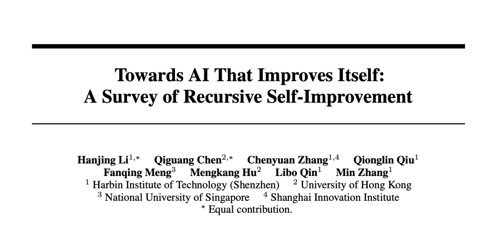
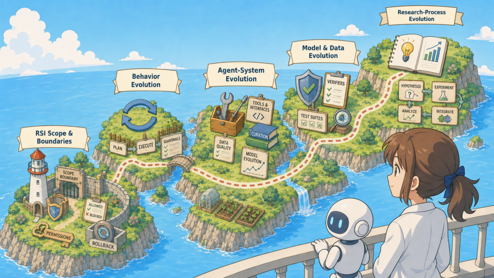
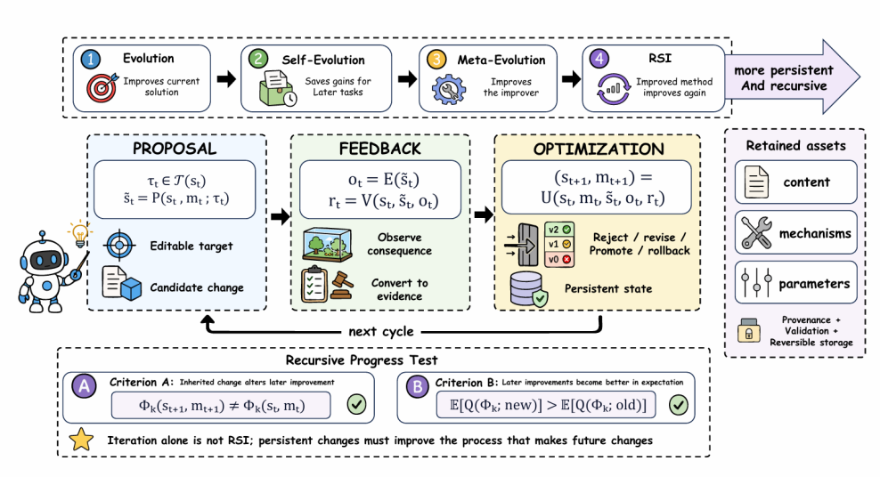
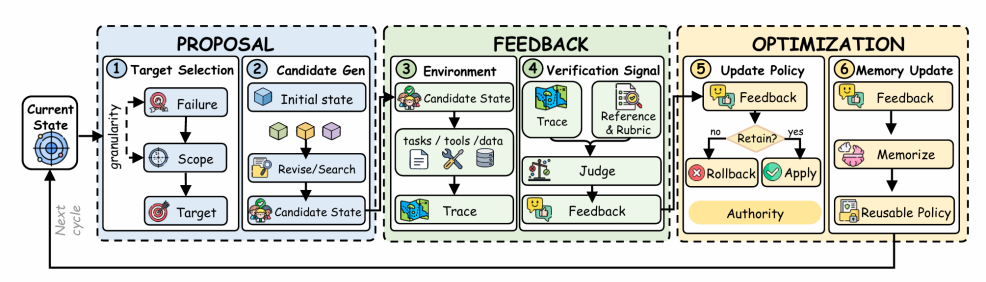
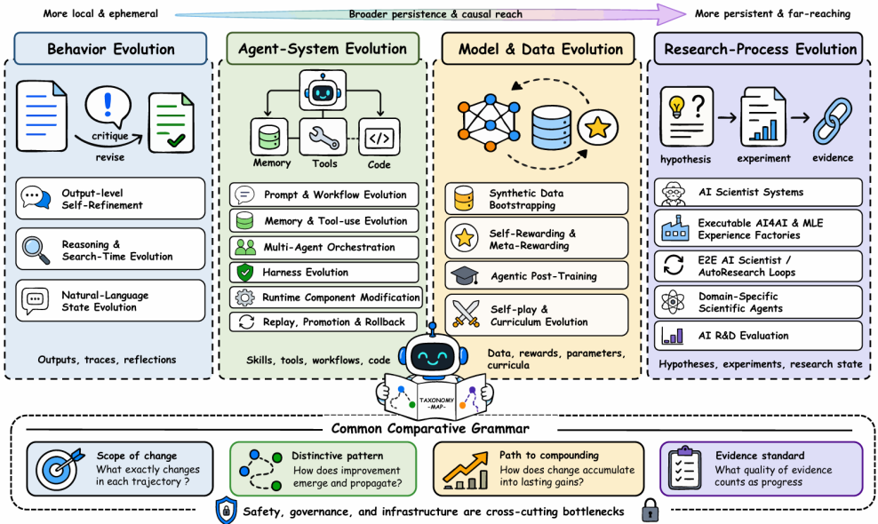
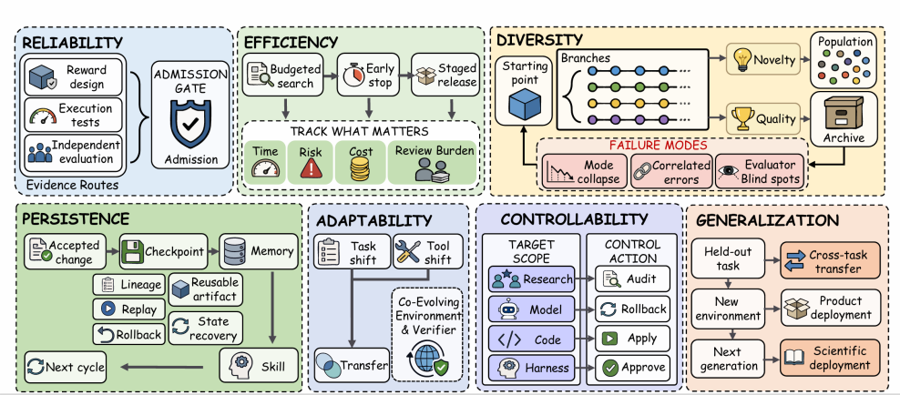
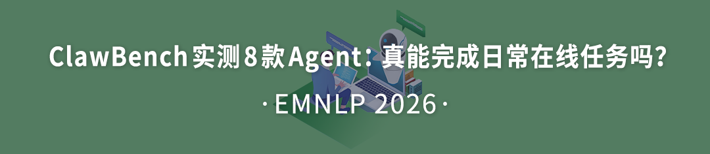

反复改进不等于递归自我改进：关键看改进能不能被验证、保留并被下一轮继承
PaperWeekly 介绍一篇递归自我改进（RSI）综述：先划清四个概念层级，再用 Proposal → Feedback → Optimization 统一描述闭环，按改进对象分四条技术路线，最后给出声明 RSI 时要交的证据和七个前沿问题。
公众号原文 精读版（加密，需密码）本页导读约 12 分钟
- 先读每节标题，标题就是这一节的结论。
- 原文 17 张图都按原顺序放着，其中 6 张是内容图，标「原图 N」，点图可放大。篇首横幅、小节编号条和文末推荐卡片也按原顺序放着，可以跳过。
- 最后有 3 道小测，答错会带你回到对应节。
原文开头一句话点题：Iteration ≠ RSI。只是「改过」不算数，要看被验证过的改进能否跨轮次继承，成为下一次改进的起点。
背景：大模型不再只回答问题，开始自己干活。Agent 会用工具、跑代码、运行实验，还会看反馈去改提示词（Prompt）、记忆（Memory）、工作流（Workflow），甚至改它自己的代码。
于是 AI 参与到优化自身的过程里，「自我改进」从设想变成了能搭出来的工程系统。但原文提醒：某一次修改让成绩变好，还说明不了系统做到了递归自我改进。
递归自我改进（Recursive Self-Improvement，RSI）盯的是三件事：这次改进有没有被验证、有没有被保留、后面的改进循环有没有接着用它。
综述要回答：哪些修改值得留下，留下后能否在新条件下继续有效

- 标题：Towards AI That Improves Itself（副标题 A Survey of Recursive Self-Improvement）
- 机构：哈尔滨工业大学（深圳）、香港大学、新加坡国立大学、上海创智学院
- 论文：OpenReview 页面
- 项目页：Awesome-RSI-Research
围绕这个问题，综述把 RSI 的定义、系统结构和现有方法，从头系统地理了一遍。
原文的判断：今天做 RSI，难的不再只是「想出更好的改法」，而是「挑出哪些改法该留」。留下的改进还得带进下一轮循环，换了任务、换了评测也依然管用。

判断 RSI 的边界是状态继承：下一轮要从上一轮留下的改进状态出发
作者先把相关系统分成四类，由浅到深依次是 Evolution、Self-Evolution、Meta-Evolution，最后才是 Recursive Self-Improvement：
- Evolution：只改当前结果。系统通过反思、搜索、重写、重规划，把手上这次的答案、执行轨迹、任务产物做好；改动用完即弃，不会以持久状态进入下一个任务。Self-Refine、局部搜索一般归在这层。
- Self-Evolution：改进留下来、再拿来用。通过验收的改动存进记忆、技能、规则、Prompt、工作流或版本状态，之后的任务会受它影响。
- Meta-Evolution：「怎样改进」本身也被改。通过验收的改动作用在改进机制上：提案者（proposer）、验证者（verifier）、更新器（updater）、harness、搜索规则、课程（curriculum）等。
- RSI：下一轮改进，从上一轮已经接受的改进状态接着走。
分界线是状态继承（state inheritance），而且要能审计：后一轮 Proposal–Feedback–Optimization 不是每次都从同一个基础状态（base state）重新起步，而是明确装载上一轮验过、留下的改进，在它上面往前做。
论文又把 RSI 分出两档强度：minimal RSI 和 recursive progress。
minimal RSI门槛低：只要通过验收的改进被之后的改进循环接着用就算。
recursive progress证据要求更高：继承下来的东西除了让之后的任务做得更好，还得让之后那套「改进过程」本身变得更有效。
一句话：强意义的递归进步，看的不是 AI 有没有变强，而是 AI 有没有越来越会让自己变强。

一轮改进分三步：提出候选、拿证据、决定留下什么
论文用一个三段式闭环来套所有自我改进系统：Proposal → Feedback → Optimization，简称 PFO。
Proposal：定改什么、怎么改
原文 · Proposal：确定优化目标与改进方式分两件事。Target Selection（选目标）：定下改哪里、改多细，可以是 Prompt、一条记忆、一项技能、工具使用策略、某个源代码模块、数据策略，乃至研究决策。Candidate Generation（出候选）：产出待选的改法，手段有文本修订、搜索、进化、程序合成、学习、自动实验。
Feedback：执行结果还不是证据
原文 · Feedback：执行结果不等于证据这里刻意拆成两块：Execution Environment（执行环境）和 Verification Signal（验证信号）。环境负责把候选真的跑一遍，留下轨迹、测试结果、训练结果、资源消耗、副作用；验证器再拿参考答案（reference）、评分细则（rubric）、评判者（judge）来裁定，这些结果够不够格叫「改进证据」。
Optimization：决定什么留下
原文 · Optimization：决定什么能留下来同样分两块：Update Policy（更新策略）和 Memory Update（记忆更新）。验证器只出证据，拍板的是更新策略——候选是保留（retain）、修改（revise）、拒绝（reject）、提升（promote）还是回滚（rollback）。Memory / Versioning 则把验过的内容、机制、参数存好，交给下一轮。

四条路线按「改的是什么」划分，越往后改动越持久、波及越广
按「被改的对象」给已有工作归类，得到四类演化目标：Behavior、Agent-System、Model & Data、Research-Process。越往后，改动越持久、波及越广：从局部、短暂的行为修正，一路到系统级的变化。
Behavior Evolution
原文 · Behavior Evolution行为演化有三支：输出层面的 self-refinement；推理与搜索阶段的演化（reasoning / search-time evolution）；用自然语言保存状态的演化（natural-language state evolution）。代表工作有 Self-Refine、Tree of Thoughts、LATS、Reflexion，靠反馈、搜索、反思把眼前的行为做好。要是这些经验沉淀成能复用的规则、记忆、技能，到后续任务还在起作用，局部优化就迈向了持久改进。
Agent-System Evolution
原文 · Agent-System Evolution改动扩到 Agent 的各个系统部件：Prompt、Workflow、Memory、Tool-use、Multi-Agent Orchestration、Harness。好处是不用碰模型权重：模型原样不动，也能一直打磨 Agent 的工作流、工具和记忆机制；改坏了也比较好验、好退。
Model & Data Evolution
原文 · Model & Data Evolution把改进落进合成数据（synthetic data）、奖励（reward）、模型参数（model parameters）、训练课程（curriculum），让零散经验固化成更持久的模型能力。
作者的限定 风险也一起被继承：verifier 判错、奖励有漏洞、脏数据混进训练，都可能被模型学走并扩散。所以要有独立验证，并用留出集评测（held-out evaluation）。
Research-Process Evolution
原文 · Research-Process Evolution被改的对象变成科研流程本身：系统自己提假设、设计并跑实验、分析结果，再看反馈调整下一步往哪研究。判断标准没变：这一轮研究得到的有效改进，下一轮还能不能接着用、接着起作用。

分数涨了不算证据：要排除算力、搜索、更强基座和评测器被摸透这些解释
系统能不停改自己时，跑一次基准测试（benchmark score）得到的分数就不太能说明问题。分数高了，原因可能是多花了算力（compute）、搜得更宽（search）、换了更强的基座（base model），甚至是评测器（evaluator）被它「学会了」。
为此综述提出一份 Operational RSI Claim Protocol，要求把「我们做到了 RSI」落成一份别人能审计的实验记录。共五条：
- 状态与干预：交代明确旧状态是什么、新状态是什么，具体修改组件是哪个，允许改动的范围（mutation scope）多大，凭什么接受这次修改；而且下一轮得拿出证据，证明它真的装载、用到了这份留下的状态。
- 反事实对照：找对照组比——冻结不动的现任版本（frozen incumbent）、不保留改进的消融（no-retention ablation）、迄今最好的祖先版本（best-so-far ancestor）。双方的资源要尽量拉平，否则模型、工具、数据、搜索宽度、时间预算、人工审核预算都可能成为差异来源；除非这项资源正是研究对象。
- Replay 与 Transfer：把以前成功的、失败的案例在后面的循环里重放，看改进留没留住、有没有退步；再换没见过的任务（held-out task）、环境（environment）、随机种子（seed）、评判者（judge）去测，看是不是真能迁移。
- 统计证据：结果随机波动大时，要给多次运行的结果、方差或置信区间。只成功一次，顶多算演示（demonstration），不足以证明强意义的递归进步。
- 失败标准：下列任一情况出现，就不能说改进器自己获得了递归增益——算力对齐（matched compute）后增益没了；增益来自更强的基础模型；增益只来自更多搜索；或者提升的只是决定准入（admission）的那个评测器。
环境在变、评测器也在变时怎么办？论文建议评测分三份各司其职：冻结的重放集（frozen replay slice）让不同轮次能放在一起比；自适应集（adaptive slice）不断挖新弱点；延后才用的留出集（delayed held-out slice）专门检验迁移。
七个前沿问题彼此关联：可靠、高效、多样、持久、适应、可控、泛化
讲未来方向时，论文列出七个互相牵连的维度：Reliability（可靠）、Efficiency（效率）、Diversity（多样）、Persistence（持久）、Adaptability（适应）、Controllability（可控）、Generalization（泛化）。
- Reliability 可靠性：得分清真进步和钻空子——钻奖励（reward）、评分细则（rubric）、评判者（judge）的空子。误判为改进的 False positive 一旦存进记忆（memory）、技能库（skill library）、训练数据（training data），后面每一轮都会继续传、继续放大。
- Efficiency 效率：计算、时间、人工审核预算都有上限。所以不能只报最后成绩，还要报运行时间、失败尝试的次数，以及每单位资源实际换回多少收益。
- Diversity 多样性：候选之间差别要够大，不然搜索会长期困在差不多的思路上。多智能体、种群搜索这类机制能把探索面撑开，但要提防看着五花八门、其实大同小异。
- Persistence 持久性：好的改进要能跨任务、跨版本持续保留；同时要防三种坏东西留下来：过期记忆、错误技能、状态污染。靠的机制包括版本记录、replay、rollback、best-so-far recovery（退回迄今最好版本）。
- Adaptability 适应性：环境和验证者（verifier）都会变，系统得跟着变；可是各轮之间还要能比高低。因此固定不变的评测和随之调整的评测，要分工承担不同角色。
- Controllability 可控性：改动层级越高，需要的权限和验证越严。用沙箱（sandbox）、发布闸门（release gate）、监控（monitoring）、回滚（rollback）把影响大的修改管住；关键的验证环节和安全边界，不能交给被改的系统自己管。
- Generalization 泛化：值得信的改进，换个任务、换个评测器（evaluator）也站得住。任务内迁移、跨领域迁移之上还有更高的目标：改进后的系统进了新环境，依然能做出更好的下一轮改进。

关注点从「有没有自我修改」转到「修改为何被接受、能否留住并迁移、是否让后续改进更好」
这个问题正迅速变成现实：AI 已经能参与代码修改、工具调用、模型训练、科研实验，那么「一遍遍地试」和「真正的递归自我改进」该怎么分开？
原文说，综述给出的答案可以归成下面三层。
- 概念上：按 Evolution → Self-Evolution → Meta-Evolution → RSI 分层画界，并规定状态继承是 RSI 起码要有的结构。
- 机制上：各种自我改进系统，都用 Proposal → Feedback → Optimization 这一个闭环来描述。
- 研究版图上：按前面那四类演化目标，加上七个前沿维度，重新编排已有工作，同时把宣称 RSI 所需的证据标准提高。
原文认为最要紧的转变：别只问系统改没改自己，要问四件事——修改为何被接受；能不能可靠保留、跨循环一轮轮传下去；能否迁移到新任务；后面的改进能力是不是真的变强了。
以前谈 RSI，多是在理论上讨论机器能不能一直变强；如今重心转到工程：怎样造出一套能可靠验证、能继承、能把有效改进越积越多的系统，最终让自我改进可验证、可持续、可迁移、可控制。
文末三张卡片推荐的是 PaperWeekly 的其他文章，与本文无关
